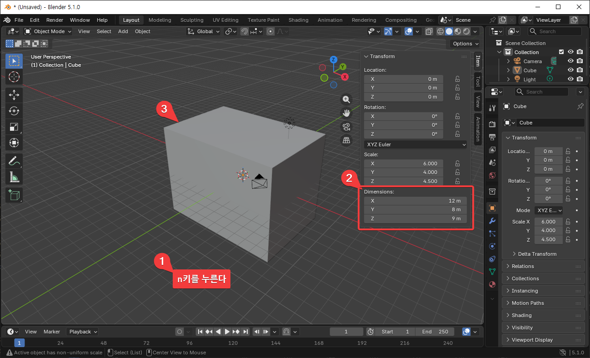
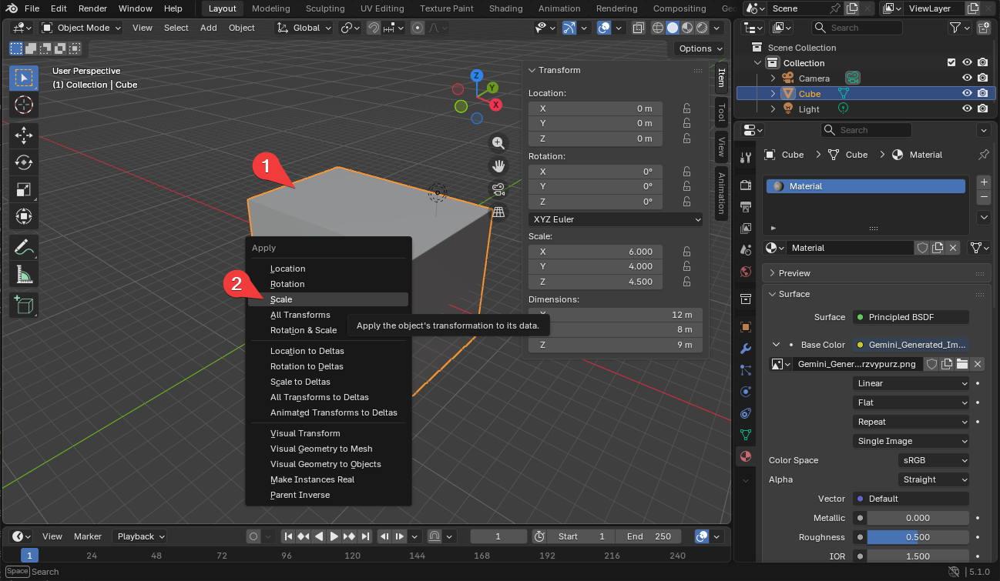
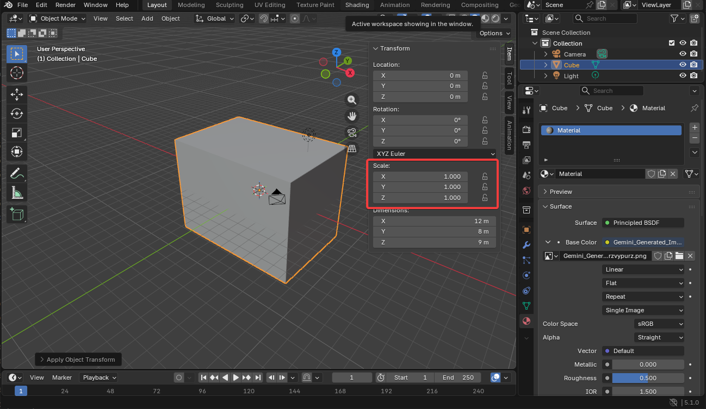
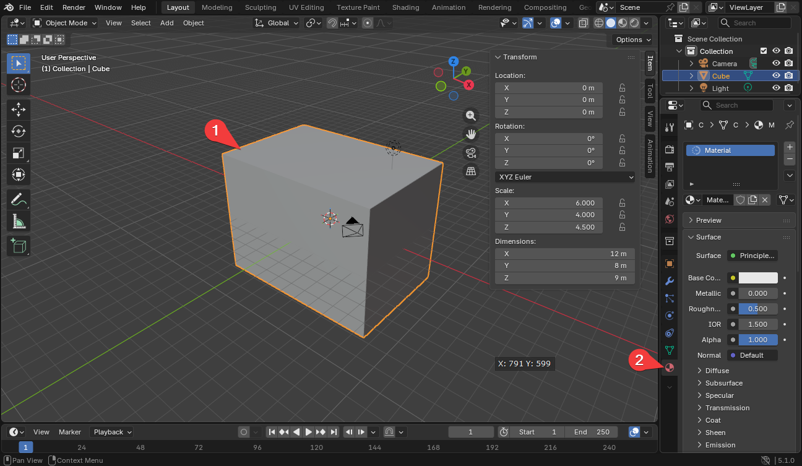
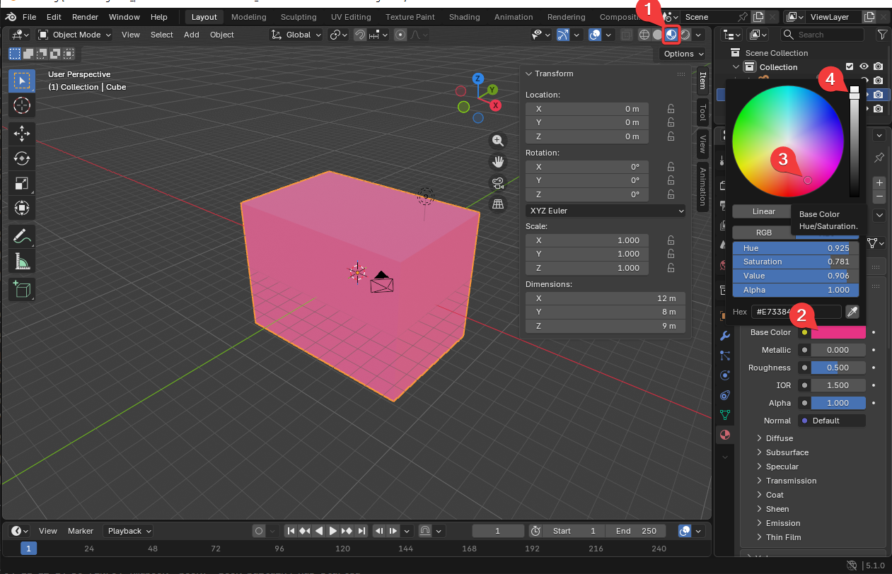
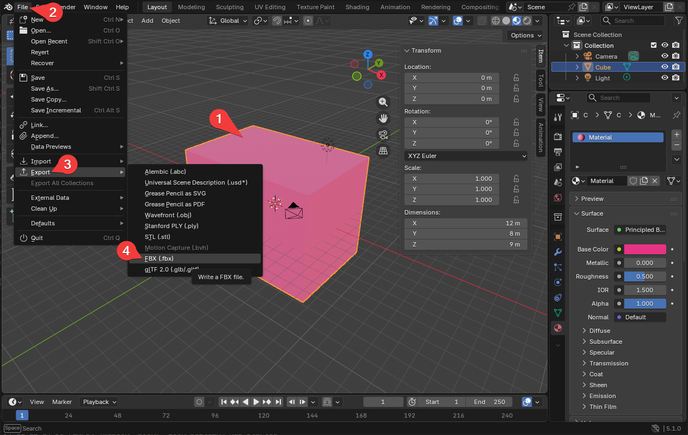
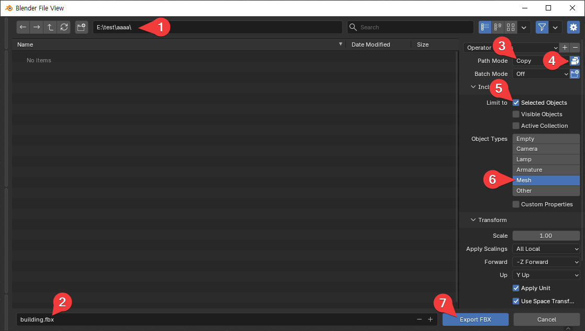

3D 그래픽 실습
건물 외형 만들기
블렌더를 실행한다.

-
블렌더 실행 후 블렌더의 빈 공간을 한 번 클릭하고 n키를 누른다.
-
Dimensions를 건물의 크기 정도인 가로, 세로, 높이의 수치로
- X: 12m
- Y: 8m
- Z: 9m
를 입력한다.
-
box의 크기가 변경된 것을 확인한다.

-
건물 모델을 선택한 후,
-
Ctrl + A를 누른다. Apply 메뉴가 나오면 "Scale" 메뉴를 선택한다.

Scale 부분이 1, 1, 1로 바뀐 걸 확인한다.
건물 색 변경

-
건물 모델을 선택한다.
-
material을 선택한다.

-
Material Preview 모드를 선택한다.
-
Base Color의 색을 클릭해 색 선택 창을 띄운다.
-
색을 선택한다.
-
밝기를 선택한다.
건물을 FBX로 내보내기
만든 건물을 digital twin, cesium 등에서 사용하기 위해서는 FBX 파일로 내보내야 한다.

-
건물을 선택한다.
-
파일 메뉴를 선택한다.
-
Export 메뉴를 선택한다.
-
FBX(.fbx 메뉴를 선택한다.)

-
FBX 파일이 저장될 위치를 설정한다.
-
파일명을 설정한다.
-
Path Mode를 "Copy"로 설정한다.
-
Embed Texture를 켠다.
-
Selected Objects를 체크한다. 선택한 빌딩 오브젝트만 내보내기 대상이 된다.
-
Mesh만 파란색 바탕이 되도록 한다. 다른 건 내보내지 않고 건물만 내보내기 된다.
-
"Export FBX" 버튼을 눌러 실제 FBX로 내보내기를 실행한다.